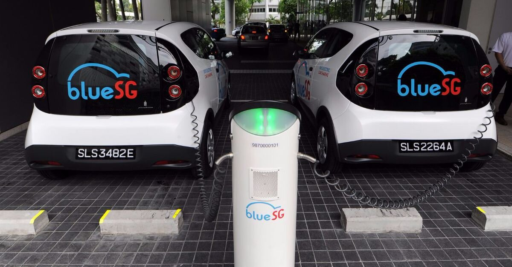

The price of a metric ton of cobalt, the precious metal used in lithium batteries, increased 60% in the last year to $81,500 USD, a 264% increase since its all time low in February of 2016. Higher prices have lifted present valuations of cobalt bearing properties and attracted capital into the metal. Typically, when a commodity booms in price supply increases until the price falls. In 2017, however, analysts predicted high prices through 2022, based on supply-side restrictions. Many of those analysts are now adjusting their price expectations downward. While there are still reasons to be bullish on cobalt, there are more and more reasons to believe the metal is overpriced.
Magnetic Metal
Cobalt is a ferromagnetic metal used in magnetic alloys. Its magnetic properties have a higher resistance to temperature than other ferromagnetic metals, like iron and nickel. It is also highly resistant to corrosion. Roughly 40% of current cobalt production is used in a cobalt-sulfate form for electroplating in lithium-ion batteries. Cobalt metal is primarily used in magnets, jet and gas turbines, porcelain and pottery coloring, and stainless steel.
More recently, cobalt has been combined with other metals, like nickel, manganese, and aluminum, to create heat, corrosion, and oxidation resistant economical cathode materials.
Risky Reserves
Of the 7,063,000 metric tons of estimated world reserves, 50% are located in Democratic Republic of Congo (DRC), 16% in Australia, and another 7% are split evenly between Russia and Canada. Between 40-60% of the world's cobalt production, or 66,000 metric tonnes in 2016, came from the copper-belt in the DRC.
| Country | Percent World Reserves 2016 |
|---|---|
| DRC | 49.9 |
| Australia | 16.9 |
| Other | 7.9 |
| Cuba | 7.0 |
| Philippines | 3.9 |
| Zambia | 3.8 |
| Russia | 3.5 |
| Canada | 3.5 |
| Madagascar | 2.1 |
| Papua N.G. | 0.7 |
| South Africa | 0.4 |
| United States | 0.4 |
Inelastic Supply
The metal is found in variety of forms. The most common are copper-cobalt ores and copper-nickel-iron sulfides. In 2016, 60% of cobalt output came as a copper by-product and 38% as a nickel by-product. The remaining 2% came from primary cobalt mines. Given the refining process, cobalt output is intrinsically tied to copper and nickel output. Moreover, the share of revenue that comes from cobalt compared to copper and nickel is small. When copper or nickel output is increased, cobalt supply increases. A fall-off in copper or nickel output restricts the global supply of Cobalt.
Image:gold mine in the DRCIn November 2017, Amnesty international, in "Time To Recharge", a human rights report targeting the cobalt supply chain, issued recommendations to countries, regions, companies, and organizations involved aimed at eliminating the many human rights violations occurring in the DRC. Following this, in late January 2018, the Congolese senate passed new mining code expected to double taxes paid by operators in the copper-belt. The Congo is also a country with considerable political risk. Michigan State Universities GlobalEdge risk assessor ranks the Congolese business climate with the highest rating of 'Very High Risk.' Weak infrastructure, high poverty levels, lack of foreign exchange reserves, and potential for political crisis increase the likelihood of cobalt supply chain disruptions and higher taxation costs.
Speculative Demand
Investors need to be wary of demand side forecasts. Unlike supply-side forecasts that are linked to nickel and copper, forward looking cobalt demand is based largely on growth in electric vehicle (EV) sales, which currently make up less than 2% of the global market. Having said that, EV sales growth projections are everywhere steep. CRU group, a commodities researcher out of London, estimates cobalt demand will grow across the next 12 years from around 100,000 metric tonnes to 300,000 metric tonnes, based on an expansion of the EV market share to 30% of global auto sales. Analysts at Macquarie Group, the Australian global investment bank, predict global 2020 EV sales will reach 5% of total global auto sales. Darton Commodities analysts forecast total cobalt demand will reach and surpass 120,000 metric tonnes annually by 2020, a 20% increase.
Accelerating Production
According to Glencore's 2017 fourth quarter production report, the miner is targeting a 42% increase in 2018 production. Glencore produces around a third of the world's total cobalt output of 100,000 annual metric tonnes. Now that Glencore's Congolese Katanga mine is producing again, cobalt output is forecast to increase in 2018 through to 2020. Katanga should add 34,000 tonnes of output in 2019 and 32,000 tonnes in 2020.
Higher output targets, have lowered forward looking prices for Macquarie analysts, but that's not the entire story. High correlation between the supply of cobalt and its host metals mean cobalt demand does less to predict supply. In 2017, cobalt prices increased steadily, but output from mines decreased by almost 12% when copper and nickel output fell.
| Year | Cobalt Mining Production in Metric Tonnes |
|---|---|
| 2013 | 110,000 |
| 2014 | 123,000 |
| 2015 | 126,000 |
| 2016 | 123,000 |
| 2017 | 110,000 |
Goodbye Cobalt
Cobalt investors also have to contend with the possibility of technical obsolescence. While cobalt is so far a go to metal in lithium-ion battery production, researchers at Tesla and other organizations are experimenting with substitutes. Wolverton Research Group, for example, is testing a lithium-iron-oxide battery that if serviceable could replace the lithium-cobalt-oxide batteries that currently figure into cobalt demand projections. The Wolverton battery could be not only cheaper, but last up to 8 times longer.
Forward Looking Cobalt Prices
The forward price of cobalt will move higher on higher than expected EV sales, upward movements in the price of copper or nickel, or rising risks or costs in the DRC copper-belt region. It will move lower if EV sales disappoint, new cobalt production comes on line (especially from pure, high-grade, or low-cost cobalt plays), or researchers develop competitive substitutes.
While many analysts are bullish, like those at BMO Capital Group who expect cobalt prices to double by 2021, some are more cautious. Macquarie analysts, for example, downgraded their 2018 average cobalt price forecast by 4.6% to $57,320 USD/metric tonne. Their 2019 average cobalt price forecast was downgraded 17.5% to $36,376 USD/metric tonne. Cobalt is currently trading at over $80,000 USD/metric tonne.
In investment, higher risks come with higher possible rewards. Whatever your views are on forward looking nickel and copper prices, cobalt is an attractive investment that's not without it's downsides.